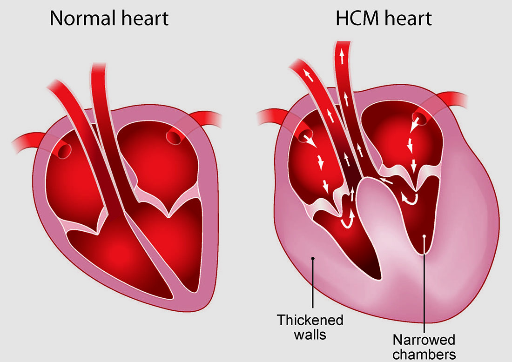
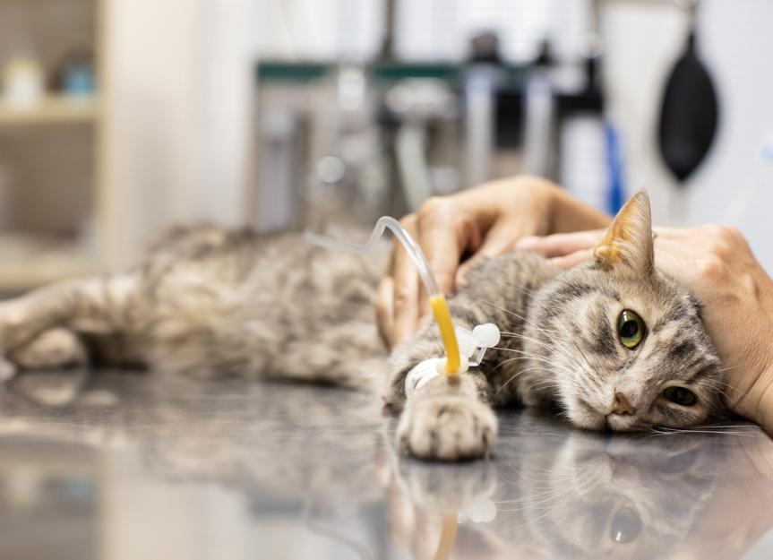

Let's learn about CATS
Cats are becoming a more and more popular choice when people are thinking about keeping a pet.
In 2016,the number of people in China that is keeping a cat is the second largest around the world,and they are owning 3.756 million cats. And in 2020, in one of the biggest shopping festival, the amount of cat food sold is even more than milk powder. More and more people are including cats into their family members.
- How to feed a cat
- How can you deal with some of the cat behavioral problems
- What specific aspect of health do you need to pay attention on your cat
- We also pick some of the popular cat breeds to introduce. Click the navigation bar and take a look!
Cat food
Most common popular cat foods are:
(dry)cat food
wet cat food(cans)
raw meat meal
cooked meat meal
we are using the pictures form some brands doesn't mean that their products are trust-worthy!
(dry)cat food
Advantages:
It takes least time for the owner to prepare
It can be the cheapest way to feed your cat
Disdvantages:
May be addictive, other types of food becomes less acceptable for your cat
Provides less water than other foods,which may leads to kidney problems
There may be problems when manufacturing, which may lead sickness or even death of you cat

(wet)cat food
Advantages:
Also is a very convinent way to prepare a meal for your cat
Contains quite an amount of water, which is good for your cat's kidney
Disdvantages:
Cost more!
Once opened, you need to get rid of it very quickly
There may be problems when manufacturing, which may lead sickness or even death of you cat
raw meat meal
Advantages:
Contains quite an amount of water, which is good for your cat's kidney
Also contains bones, which is good for teeth cleaning
This is the most natural way for you to feed your cat
Disdvantages:
Cost more!(but in china, acually less)
Hard to store,you may have to do certain amount for certain period
You need to select your source of meat very carfully otherwise your cat may get parasites
You also need to add some trace element to make sure the nutrient is balanced
cooked meat meal
Advantages:
Contains quite an amount of water, which is good for your cat's kidney
This is the second most natural way for you to feed your cat
You don't have to be afraid of parasites
Disdvantages:
Cost more!(but in china, acually less)
Hard to store,you may have to do certain amount for certain period
You also need to add some trace elements to make sure the nutrient is balanced
Cat behavioral problems
There are several common cat behavioral problems:
Keep meowing all the time
Pee outside of the cat litter box
Attacking people
For most of the problems, they are not cats' problems, but human's!
My cat couldn't stop meowing!
Potential reasons:
Your cat is not sterilized!
--> Take her/him to the doctor and arrange the operation as soon as possible!
Some kittens do that because they are unfamiliar with the new environment, just be patient
Your baby is probably sick! If she/he is not eating or excreting well, please take her/him to the vet asap!!!
My cat is peeing everywhere!
Potential reasons:
Your cat is not sterilized!
--> Take her/him to the doctor and arrange the operation as soon as possible!
There is something wrong with your baby' kidney or urinary system
-->Stop waiting and take him/her to the vet! This can lead to death!
Your baby is feeling anxious
-->Find the source of stress and do your best to minimize it
My cat is like a monster!
Potential reasons:
Your cat has trauma!
--> Ask a professional Ethologist!
Your cat is not socialized properly
-->Go watch Cats from Hell, you can study how to deal with that
My cat is destroying my sofa!
Potential reasons:
Your baby just like that place
--> Put a protection layer in that place
--> If you don't have a scratching board, buy your cat one
--> If you do have one, every time your cat is scratching your sofa, lead him/her to the scatching board and once him/her starts scratching the board, give him/her s treat
Cats'health problems
Hypertrophic cardiomyopathy
Renal Failure
Anuria
Feline panleukopenia

Hypertrophic cardiomyopathy
(HCM) is a condition that causes the muscular walls of a cat's heart to thicken, decreasing the heart's efficiency and sometimes creating symptoms in other parts of the body.
Can only be diagnosed by echocardiography
If you feel like your cat has difficulty in breathing, this condition is highly doubted
Non-curable temporarily
Daily care: feed your cat coresponding medication,avoid strenuous exercise
Renal Failure
Symptoms of end stage kidney failure in cats include dull sunken eyes, inability to walk, body odour, incontinence in bladder or bowels, refusal to eat or drink, seizures, confusion, pacing and restlessness, withdrawing, hiding and running away.
Main cause is that cat is not drinking enough water
Drinking enough water is very important for your cat!
Daily care: feed your cat coresponding medication,avoid specific kind of food
Anuria
Anuria refers to a medical condition where essentially no urine is being produced by the body. Cats with anuria produce urine at a rate of less than 0.08 milliliters of urine per kilogram per hour.
Anuria may result from a complete obstruction in the urinary tract, a rupture in the urinary excretory pathway, or from very severe kidney failure.
Drinking enough water and keep a peaceful environment are very important for your cat!
Daily care: feed your cat coresponding medication,avoid your cat being in a stressful environment
Feline panleukopenia
Feline panleukopenia is a highly contagious, often fatal, viral disease of cats. A majority of infections are subclinical. In cats that do become ill, clinical signs include high fever, profound depression, and anorexia. Many affected cats vomit, and some develop diarrhea.
Rusult from infection, being in the exvironment containing this virus
Make sure your cat is fully vaccinated and can produce enough antibody!
Daily care: feed your cat coresponding medication, make sure your cat eat things during treatment
About & Contact